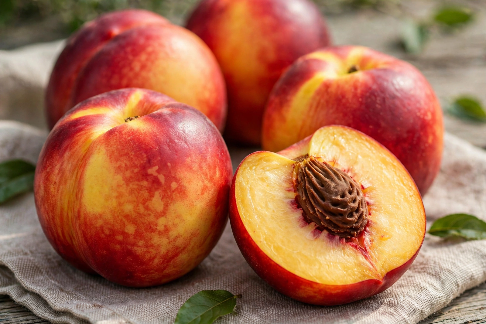

Nectarine

Species: Prunus persica var. nucipersica
Family: Rosaceae
Type: Stone fruit
The nectarine (Prunus persica var. nucipersica) is a smooth-skinned variety of the peach. Although fuzzy peaches and nectarines are the same species, they are commercially marketed as different fruits; the difference is a single recessive allele that removes the fuzz (trichomes) from the skin. Nectarines can arise spontaneously on peach trees and vice versa.
Description
Nectarines are generally slightly smaller and often more intensely coloured and aromatic than peaches, with white- or yellow-fleshed cultivars, both freestone and clingstone. Like the peach, the species originated in China, where peaches were cultivated for millennia before spreading along trade routes to Persia and Europe, and later to the Americas.
Cultivation and use
Nectarines are grown in temperate orchard regions worldwide, with major production in China, Spain, Italy, Greece and the United States (especially California). The smooth skin makes the fruit more susceptible to bruising and some diseases. Nectarines are eaten fresh and used in desserts, salads, preserves and drying. They provide vitamin C, vitamin A precursors and potassium.